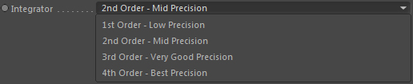

One-Way Fluid Coupling
This tag allows to couple any Cinema 4D object to the flow of a fluid simulation. This means the object with a fluid coupling tag attached will be influenced by the flow and may be boosted away by explosions or strong wind forces.
This coupling is a one-way coupling, means the object is influenced by the fluid but the fluid is not influenced by the object.
Set Current as Rest Matrix
Set the current object matrix (position and rotation) as rest matrix.
So whenever the timeline is reset to the beginning the object is set back to this original position and rotation.
Dynamics
Link here the fluid dynamics node that contains the velocity field that
you want to use for fluid coupling. This node is required.
Flow Resistance
Adds some drag to the resulting motion to simulate flow resistance.
Blend with Original
Blend the coupling effect with the original motion of the coupled object (so this tag is attached to).
Allows to smoothly integrate with existing dynamics (its limited though).
Angular Speed
The angular speed influence, so the rotational strength the fluid flow excerts on the object. Lower values allow the object to rotate more smoothly (even with very strong fluid flows).
This is like a rotational flow resistance value.
Integrator

When the object is transported by the fluid dynamics motion
there can be several physical integration modes which all result in more precision of the transport. The path of the transport is approximated more precisely depending on which mode you choose.
These are the available modes:
_ 1st Order: Fast - Low accuracy
_ 2nd Order: Pretty fast - Good accuracy
_ 3rd Order: Slow - Very Good accuracy
_ 4th Order: Very slow - Best accuracy
Buoyancy
This buoyancy value allows to mimic a buoyant effect such as objects
rising in water (due to lower matter density) and flowing on top.